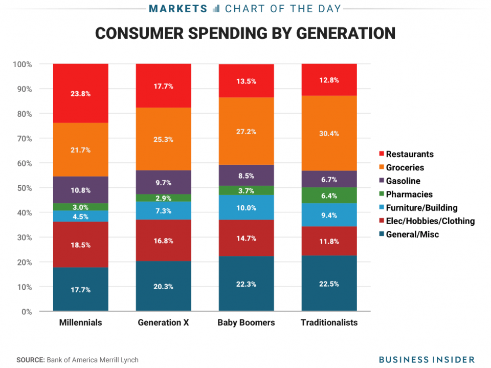

Portfolio
Consumer Spending by Generation
Objective
I consider myself as a spendy person, but am I the only one? Sometimes, I think about whether if my peers, age 22 to 26, also spend a lot of money. Given enough thought, I have decided to tackle this week’s makeover project on consumer spending by generation.
Dataset
Dataset by Makeover Monday on March 25th, 2019. The csv file was directly downloaded from data.world. The original visualization published in an article on Yahoo look like: 
Strategy
As usual, I have chosen Tableau, because it is flexible and easy to use for any data visualization. Instead of finishing this project with bar or line graphs with basic information, I have decided to challenge myself by making unique pie charts. Not only it would enhance my Tableau skill, but also I was able to learn and explore more visual tool tips/tricks.
Dashboard

Conclusion
After finishing this week’s project, I was surprised to see how much my peers spend on restaurants. As a millennial, I admit that I am lazy or too busy to cook at home.